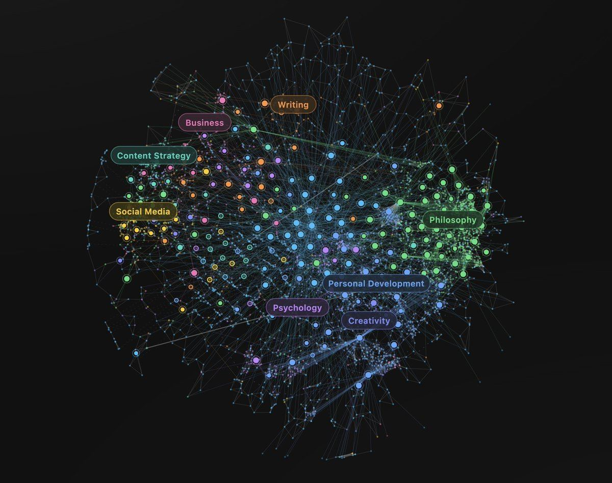

原题：How to remember everything you read (stop trying)
作者：Dan Koe（@thedankoe） | 发布：2026-07-27（北京时间；原始时间戳为 2026-07-26 16:25 UTC） | 原文：https://x.com/thedankoe/status/2081415714636996844
译注：【配图】为原文配图位置。文中有大段 Eden 产品推广，照译保留。原文"Greuter's 9 stages of ego development"应指苏珊·库克-格罗伊特（Susanne Cook-Greuter）的自我发展九阶段，原文只写了"Greuter"。
如果你需要去记住它，它就不重要。如果它重要，你自然会记住它。
If you need to remember it, it’s not important. If it’s important, you will remember it.
不知为何，"记住你读过的一切"已经成了一种执念。关于这个的视频有几百个，播放量数以百万计。
For some reason, it’s become an obsession to remember everything you read. There are hundreds of videos about it with millions of views.
人们觉得，如果自己没有记住读过的知识，自己就是失败者，或者浪费了时间，可这根本不是阅读的意义所在。
People feel like if they don’t retain the knowledge from what they read, they're a failure, or they wasted your time, when that’s not the point of reading at all.
你到底为什么要背下一本书的每一个字？
Why would you want to memorize every word of a book in the first place?
You want to impress others with your articulation and intelligence, but you don’t realize that sounding smart comes from understanding, not memorization, and understanding requires a much different approach to learning. It also doesn’t help that schools tested you on your ability to memorize. You studied for hours just so you could pencil in the right answer. That’s not how life works.
You want to acquire knowledge so that you can make better decisions and work yourself into a more advantageous life situation with more money and power so you don't have to worry about your day-to-day survival. Everyone wants that, but memorizing facts is the least effective way to get there.
这是我们首先要谈的——如何以一种真正记得住的方式获取知识，从而为自己创造更好的未来。
That’s what we’ll talk about first - how to acquire knowledge in a way that actually sticks, so you can create a better future for yourself.
Then, we’ll talk about why your note-taking system, bookmarks, and even your precious “second brain” (the sex doll for mental masturbators) are largely useless.
【配图】（原文此处为分隔线）
如果你对自我推广过敏，请跳到文章其余部分：
Skip to the rest of the article if you're allergic to self-promotion:
作者产品推广（Eden）· 已折叠，点击展开
说到第二大脑，我们刚刚给 Eden 加了"资料库"（Library）、"阅读器"（Reader）和"高亮"（Highlights）功能。现在，你不仅可以研究创作者的头部内容、找到你下一个爆款话题（并定时发布帖子），还可以建立一个由帖子、链接和想法组成的、相互关联的资料库，Eden 会替你整理——并允许你按含义而不只是按关键词搜索。
Speaking of second brain, we just added Library, Reader, and Highlights to Eden. Now, not only can you research creators’ top content and find your next viral topic (and schedule posts to be published), but you can build an interconnected library of posts, links, and ideas that Eden organizes for you - and allows you to search based on meaning rather than just keywords.
If you don’t have the goal of getting in shape (and I’m talking a deep intrinsically generated goal not a superficial goal you’re pursuing to fit in, like a new years resolution) then a night of heavy drinking and partying won’t register as a problem (negative feedback), because it doesn’t impact your non-existent goal of performing on your morning run or gym session the next day. You can go to work just fine with a hangover because you don’t give a shit about how well you do at your job.
Cybernetics sounds like something relating to cyborgs, but it stems from the Greek word kybernētēs, meaning steersman or helmsman. The person who steers the ship.
The word “cybernetics” was chosen because the helmsman is the perfect image of a feedback system. The helmsman doesn’t just point the ship in a direction once, he constantly reads the current state (wind, waves, heading), compares it against the intended course, and adjusts. In other words, the process of trial and error, and so few people have the direction that allows them to notice errors in their life.
控制论阐明了智能系统的属性。
Cybernetics illustrates the properties of intelligent systems.

【配图】
参考信号（目标）——系统持有一个目标状态。
Reference signal (the goal) – The system holds a target state.
传感器（感知）——系统读取自己的当前状态。
Sensor (perception) – The system reads its current state.
比较器（差距）——系统计算目标状态与当前状态的差异。这个差异就是误差信号。
Comparator (the gap) – The system computes the difference between target and current state. The difference is the error signal.
执行器（行为）——系统采取行动以减少误差。
Actuator (behavior) – The system acts to reduce the error.
就像恒温器在太冷时打开暖气，或者你的胰腺在血糖升高时释放胰岛素。
Like how a thermostat turns on the heat when it gets too cold, or how your pancreas releases insulin when blood sugar rises.
When most people try to learn something new, they focus on content. They hoard material and try to absorb it with spaced repetition, flashcards, courses, and learning the fundamentals. They assume learning is an input process.
实际上，学习是一个输出过程，因为输出会要求输入。
In reality, learning is an output process, because output demands input.
目标创造误差信号。
A goal creates the error signal.
误差信号创造过滤器。
The error signal creates the filter.
过滤器创造相关性（大多数人用噪音和永远用不上的东西填满自己的心智）。
The filter creates relevance (most people fill their mind with noise and things they will never use).
A person who has been conditioned their entire life to have the nearly unconscious goal of going to school and getting a job will naturally learn and behave in that direction. The destiny they were assigned will inevitably come true.
The person who is deeply conditioned to go down the default path will not even notice money-making opportunities outside of a job, because their brain is filtering it out. The big life goals they were assigned at birth dictate their behavior and learning. They are a puppet of someone else’s ideals. They are not in control of their life.
But if you consciously create your own frame, by knowing exactly what you don’t want out of life and comparing it to an evolving vision of what you do want out of life, you are only then able to sense when you are off track, notice the error, correct the direction you are heading, and learn as a byproduct.
有道理，但你实际上要做什么？
Makes sense, but what do you actually do?
第 1 步）痴迷于一个有意义的目标。
Step 1) Become obsessed with a meaningful goal.
变得痴迷的方式，是审视你当前的行动，并意识到如果你不改变，你的人生最终会落到哪里。
The way you become obsessed is to look at your current actions and realize where your life will end up if you don’t change.
对大多数人来说，那个结局并不好看。
For most people, that outcome is not pretty.
和那个画面待在一起，让它用强烈的情绪填满你，然后把这股情绪能量重新导向你人生中一个更好的方向。
Sit with that image, let it fill you with potent emotion, and redirect that emotional energy toward a better direction for your life.
Only then can you actually align the goals you pursue with the aim of your future. Only then does a useful learning process start, the opposite of schooling, where your learning is determined by the direction and goals society sets for you.
走极端会改变你的大脑、增强神经可塑性。在我看来，做一个极端的改变，比做很多小改变要好。
Being extreme changes your brain and enhances neuroplasticity. In my eyes, you’re better off making an extreme change than making a lot of small changes.
破釜沉舟。改变你的人生。
Burn the boats. Change your life.
2）不要开始学习。
2) Don’t start learning.
你想要的人生，在一系列有意义的项目的尽头。
The life you want lies at the end of a series of meaningful projects.
Your mind is to be treated as a project. As is your body, relationships, and financial situation. A project is simply a structured set of goals and milestones. A project creates a frame for your learning (by filtering unimportant noise). Anything that does not directly move the project forward is not worth learning (right now), because you won’t retain it anyway.
换句话说，当你想学某样新东西时，不要开始学习，而是朝目标迈出第一步。
In other words, when you want to learn something new, don’t start learning, take the first step toward the goal instead.
I ultimately think that everyone should be figuring out what it is that they uniquely do best—that aligns with who they are fundamentally, and that gives them authenticity, that brings them specific knowledge, that gives them competitive advantage, that makes them irreplaceable. And they should just lean into that. And sometimes you don’t know what that is until you do it.
– Naval
学校教通用知识，或者做一份工作所需的知识。
Schools teach general knowledge, or knowledge required to do a job.
They do not teach how to navigate your own path. They narrow you into one area of study, which by nature does not prepare you to direct your own work through the path of entrepreneurship - or simply doing what you want to do.
Self-education is the process of learning what’s necessary to achieve self-generated goals. Again, no hoarding general knowledge to feel like you’re learning.
举个例子，假设我想学 After Effects——那款动画软件。
As an example, let’s say I want to learn After Effects - the animation software.
去看一堆通用的 After Effects 教程、学会这个软件的每一个小细节，是愚蠢的。
It would be stupid to go and watch a bunch of general After Effects tutorials and learn every little thing about the software.
相反，你需要对你想做的项目有一个愿景。
Instead, you need a vision for the project you want to build.
你用已有的知识开始这个项目，如果你没有知识，那就找一个与你想创作的项目尽可能相似的具体教程。
You start the project with the knowledge you have, and if you don’t have knowledge, then you find a specific tutorial that is as similar to the project you want to create as it can be.
Now, since you have a filter (what you want to create), most of the tutorial will be useless, but you will find one little technique that allows you to at least start the project.
You apply that and then repeat until you’ve stacked so many techniques that when you go to create your next project, then the next, it becomes easier and easier.
Then you learn the first chord of the song. Then the second. Then the third. And eventually you learn to tune it a specific way, and you pick up little hacks that allow you to play better.
学会几首歌之后，你会觉得自己可以创作一首简单的歌了。
After learning a few songs, you feel as if you could then create your own simple song.
这就是学习的方式。
That is how you learn.
第二潜意识（删掉你的笔记系统）
The Second Subconscious (Delete Your Note-Taking System)
我以前试过所有的系统，而且我很喜欢它们。我从 Roam Research 开始，它彻底改变了我的写作方式。我建立了一个由有力想法组成的知识库，每次坐下来在屏幕上写字时都从中取材。
I’ve tried all the systems before, and I loved them. I started with Roam Research, and it completely changed how I write. I built a knowledge base of potent ideas, and pulled from those every time I sat down to put words on a screen.
A few years ago, I even built Kortex, which wasn’t meant to be second-brain software, but that’s what it ended up being before it inevitably failed. Well, it didn’t really fail, but it painfully evolved into Eden, which has become the best tool on the market to find what’s trending on social media (for creators), and capture ideas from anywhere (for creatives).
所以，我不是来说第二大脑没用的。
So, I’m not here to say that second brains are useless.
You bookmark and take notes just for them to never be seen again. You quite literally wasted your time thinking you were learning when you could have been actually learning, as we discussed.
Marcus Aurelius’ book, Meditations, is essentially a private commonplace book with notes to himself and digested philosophy. It was never meant to be published.
列奥纳多·达·芬奇在数千页笔记本上画满了草图、观察、问题和借来的想法。
Leonardo da Vinci filled thousands of notebook pages with sketches, observations, questions, and borrowed ideas.
Their inventions, writing, and music would not be what they are today, and I would go as far as saying you wouldn’t even know who those famous people are if they didn’t have some variation of a commonplace book.
When you create something, your subconscious spits out relevant ideas that contribute to the quality of the creation, but it’s still limited in processing power, and sometimes it decides to not help you at all, leaving you in a creative rut.
塞涅卡用过的一个比喻是：从许多花中采集花粉，然后把它酿成你自己的蜜。
A metaphor that Seneca used was to gather pollen from many flowers, then digest it into your own honey.
This is the antidote to writers block. You don’t have ideas for your writing, content, or videos because you don’t have a repository of ideas to pull from. Every single thing I’ve written in this letter is from articles, videos, social posts, random ideas, and highlights I’ve saved before.
我想你明白了，但我们到底要如何建立它？
I think you get it, but how do we actually build this?
How do we create a digital commonplace book, or second subconscious, that we can build throughout our lives that doesn’t turn into a cluttered note-taking app where your ideas go to die?
第 1 步）选择合适的软件，或者创建你自己的 AI 系统
Step 1) Choose The Right Software, Or Create Your Own AI System
别对 AI 有多"聪明"大呼小叫。它比一袋湿锤子还蠢。
相反，要利用它在大数据集上对简单任务进行快速输入和输出的能力。
——德文·埃里克森（Devon Eriksen）
Don’t get breathless about how “smart” AI is. It’s dumber than a sack of wet hammers.
Leverage, instead, its ability to do rapid input and output for simple tasks on large datasets.
– Devon Eriksen
大多数笔记和"第二大脑"软件仍然需要手动维护。
Most note-taking and “second brain” software still require manual upkeep.
其中一些附加了一个 AI 对话功能，这绝对有用，但它们缺失了最有用的那个应用：让你的想法不会消失在虚空里——因为你的创作工作取决于你重新调出它们的能力。
Some of them have an AI chat tacked on, which is absolutely useful, but they’re missing the most useful application of them all: making it so your ideas don’t disappear into the void - because your creative work depends on your ability to resurface them.
这里你有 2 个选择。
You have 2 options here.
我们的目标，是有一个地方可以随手丢进想法，并能轻松为我们的项目调出合适的想法。
Our goal is to have somewhere to drop ideas and easily be able to resurface the right ones for our project.
选择 1——用 Claude Code + Obsidian 这样的组合，把你的知识存在一个地方，并用 AI 检索想法
Option 1 - Use a combination like Claude Code + Obsidian to store your knowledge in one place and retrieve ideas with AI
选择 2——用 MyMind 或 Eden 这样的软件，它们会自动打标签、分类，并把你的知识嵌入"语义空间"，从而能连接看似无关的想法，催生新颖的洞见
Option 2 - Use a software like MyMind or Eden, which auto-tags, categorizes, and embeds your knowledge in “meaning space” so it can connect seemingly unrelated ideas to birth novel insights
关于选择 1，网上有大量教程。它现在非常流行，因为人们把宝贝的 Notion 模板收藏换成了 Claude 技能收藏（这股风潮会像所有风潮一样消退），不过下面是自己动手的 80/20 做法：
There are plenty of tutorials on the internet for option 1. It’s very popular right now because people swapped their precious collection of Notion templates for a collection of Claude skills (a fad that will fade as they all do), but here’s the 80/20 of how to do it yourself:
下载 Obsidian 和 Claude
Download Obsidian and Claude
打开 Claude Code 或 Claude Cowork，选择你电脑上的 Obsidian 仓库文件夹作为工作文件夹
Open Claude Code or Claude Cowork and select your Obsidian vault folder on your computer as the folder you’re working in
创建一个"保存想法"技能——让 Claude 创建一个技能，在收件箱文件夹里创建一条带清晰标题的笔记
Create a “save an idea” skill - ask claude to create a skill that creates a note in an inbox folder with a clear title
创建一个"处理我的收件箱"技能——让 Claude 创建一个技能，遍历你的收件箱文件夹，添加标签，移动到正确的文件夹，并添加指向仓库内其他相关笔记的反向链接
Create a “process my inbox” skill - ask claude to create a skill that goes through your inbox folder, add tags, move it to the right folder, and add backlinks to other related notes within the vault
让 Claude 帮你定义分类体系，这样它就知道该用哪些标签/类别
Ask Claude to help you define your taxonomy so it knows what tags/categories to use
这让你能把想法、笔记和知识捕捉进一个经过时间检验的笔记工具。
That allows you to capture ideas, notes, and knowledge into a time-tested note-taking tool.
然后，你可以随时让 Claude"在我的仓库里搜索所有与[我正在写的想法]相关的内容"。
Then, you can ask Claude at anytime to “Search my vault for everything related to [idea I’m writing about].”
这对找到大多数想法都管用，但好的写作和创作来自新颖的连接，而不是关键词搜索，也不是 AI 头脑风暴同义词来寻找相关匹配。
That works for finding most ideas, but good writing and creative work come from novel connections, not keyword search or the AI brainstorming synonyms to find related matches.
If you don’t want to do all of that manually, then you can use a software like MyMind, which allows you to save any link or idea to one big and searchable library.
Eden 做同样的事（你可以把任何东西快速捕捉到资料库里），但更进一步。当你保存一个链接，比如一篇 Substack 文章或一个 YouTube 视频，它会转写内容，并允许你划重点。此外，你可以接入 Kindle，导入你以前所有的划线——那是强有力的创作燃料。
Eden does the same thing (you can capture anything fast into your library), but takes it a step further. When you save a link, like a Substack article or YouTube video, it transcribes it, and allows you to highlight it. Plus, you can integrate with Kindle to pull all previous highlights in - which are potent creative fuel.
MyMind 和 Eden 与 Obsidian 和 Claude 的不同在于，你添加到资料库里的一切都会被自动打标签、分类和嵌入。所以你可以做和 Claude 一样的搜索，而不浪费宝贵的 AI 用量（如果你确实想用 Claude 建立和访问你的知识库，Eden 也有一个 MCP）。此外，如果你是写作者或创作者，Eden 有一个异常值搜索信息流，你可以在那里找到你所在领域里表现好的社交帖子，并把它们直接存进资料库。
The way MyMind and Eden differ from Obsidian and Claude is that everything you add to your library is automatically tagged, categorized, and embedded. So you can do the same search that Claude allows you to do, without wasting precious AI usage (Eden also has an MCP if you do want to build and access your knowledge base with Claude.) Plus, if you’re a writer or creator, Eden has an outlier search feed where you can find what social posts are performing in your niche and save them straight to your library.
我不完全确定 MyMind 是否能做到这一点，但 Eden 的另一个不同在于，它可以按含义搜索。
I am not entirely sure if MyMind does this, but with Eden, it also differs in that it can search based on meaning.
Obsidian can show you “what’s related,” Eden can show you “what’s nearby” because each idea is embedded with ~1500 numbers that act as GPS coordinates for an idea. They can be found even if they share zero of the same words. This is what allows you to just drop an idea in and forget about it, because you know you will find it exactly when you need it.
【配图】
它能调出新颖的连接，而不必每次都重新搜索你的整个知识库、耗费几十万个 AI token。
It can pull up novel connections without re-searching through your entire knowledge base every time, costing hundreds of thousands of AI tokens.
You probably don’t want to maintain a vector database, an embedding API, indexing scripts, re-embedding when notes change, keeping the index in sync when files are renamed or deleted, and caching so you don’t re-pay for unchanged content.
All of the tools do this for free, but if you want a true “second subconscious” that you can research while writing, creating, or building projects - Eden may be worth trying out.
第 2 步）捕捉最能代表你理想心智的想法
Step 2) Capture The Ideas That Best Represent Your Ideal Mind
Now that you have a place to drop ideas without worrying about organization (because you only organize things if you want to find them later, which we just solved), you don’t just dump everything in their.
当 AI 能创造任何东西时，策展比以往任何时候都更重要。
When AI can create anything, curation matters more than ever.
As a writer, creator, or someone trying to do independent work (meaning you need to build an audience by attracting them to the ideas you put out), people don’t follow you for your content anymore.
有 Google、有 AI，还有大量点一下就能找到的信息。
There’s Google, AI, and plenty of information that can be found at the click of a button.
They follow you for your point of view. Your opinion. Your interpretation. Your personality. Your story. And all of those things are downstream of the ideas that compose your worldview. The ideas you use to make sense of the world.
As an example, when I get into a conversation about the nature of reality, my mind jumps to ideas about history, integral theory, spiral dynamics, and more - because I’ve deemed these the most useful lens from which I can view that conversation from. It makes the most sense out of the other ideas I’ve heard that tend to fall flat.
这些就是你要捕捉的想法。
Those are the ideas you capture.
你策展一大套最能代表你理想心智的知识。
You curate a large set of knowledge that would best represent your ideal mind.
因为那本来就是你那套花哨的笔记系统该有的样子，对吧？
Because that’s what your fancy note-taking system was meant to be, right?
You just never got around to solidifying those ideas as a part of yourself, usually through the act of thinking, writing, and sharing in public so that you can receive feedback from the market and let the best ideas win.
You read more books. You let your curiosity guide you. You reject doomscrolling and embrace curated lists of authors and thinkers who are dedicated to producing good ideas. You make time for “research,” because as a writer or creator, that’s 80% of your job.
你工作的其余部分，只是把那些"研究"综合成对别人有益的东西。
The rest of your job is just synthesizing that “research” into something that’s beneficial to other people.
第 3 步）通过创作这一行为构建你的理想心智
Step 3) Build Your Ideal Mind Through The Act Of Creation
我们来闭合这个回路。
Let’s close the loop.
我们有了捕捉和检索知识的系统。
We have the system for capturing and retrieving knowledge.
但现在我们还需要一个项目来应用它，这样它才不会被浪费。
But now we need the project to apply it too so that it doesn’t go to waste.
And, we still aren’t capturing specific knowledge because we don’t have a reason to learn. We aren’t giving our mind the frame from which it can effectively signal that ideas are important enough to capture, as we discussed.
We want to be smarter. We want to retain and remember what we learn. We want to sound articulate. For superficial reasons, maybe, but also because the outcome of our lives depend on the decisions that we make, and our level of smartness and ability to articulate our own value absolutely contribute positively to that.
我没法告诉你该创作什么。
I can’t tell you what to create.
但如果你对写作感兴趣，我可以给你我的流程中最近帮到了另一个人的一部分。
But if you’re interested in writing, I can give you a part of my process that recently helped someone else.
对于写一篇 Substack 文章、YouTube 脚本或 X 文章这样的事，我会这么做：
For something like writing a Substack article, YouTube script, or X article, here’s what I would do:
1）选一个话题。
1) Choose a topic.
显然。
Obviously.
最好的话题，位于表现与兴奋的交汇处。
The best topics are the ones that lie at the intersection of performance and excitement.
表现 = 已经被证明表现好的话题。
Performance = topics that have already proven to do well.
You find these by saving social posts that have gone viral, or using a research tool that allows you to find outlier content and study creator’s top posts.
(This article I’m writing now is based on “How to remember everything you read,” a topic that has gone viral more times than I can count, but I applied my own contrarian perspective to it).
兴奋 = 你出于好奇心想要进一步探索的话题和想法。
Excitement = topics and ideas that you want to explore more out of curiosity.
Your job is to pair the topic you want to write about (that probably wouldn’t do well on social media) with a topic that has already proven do well, so that you can write about what you want and increase it’s potential to actually gain traction.
大多数新手就是在这里失败的。
That’s where most beginners fail.
2）头脑倾倒 → 提纲 → 草稿
2) Braindump → Outline → Draft
先别开始写。
Don’t start writing yet.
写作者不会只打开一页纸，然后指望所有想法都线性地各就各位。
Writer’s don’t just open one page and then expect all of the ideas to linearly fall into place.
Start with a braindump. Write down all potential ideas that could fit under the topic you’re writing. Look through your notes, ideas, and links and add them inside it too.
Then, start to add some structure with an outline. Take all the ideas in your braindump and try to fit them into a general storytelling framework: Problem → Insight → Solution.
在提纲的每个部分下组织想法。
Organize ideas under each of those sections in the outline.
然后，在你把这些想法串成一份真正的草稿时，把提纲、想法和知识库都打开，随时取用。
Then, have your outline, ideas, and library of knowledge open and ready to pull from as you string together the ideas in the form of an actual draft.
3）用 AI 消除摩擦，而不是替你写。
3) Use AI to remove friction, not write for you.
我会在以后的信里写我对 AI 写作的看法，但当我说"别用 AI 写作"时，我其实是在说"别用 AI 来表达你自己的信念和观点"。
I’ll write about my thoughts on AI writing in a future letter, but when I say “don’t use AI for writing,” I’m actually saying “don’t use AI to articulate your own beliefs and opinions.”
既然 Substack 有了 AI 写作检测器，人们就会开始指出某些账号在写作中使用了 AI。已经有几个人指出我的一些文章里有 AI 写的内容。
Now that Substack has their AI writing estimator, people are going to start pointing out how certain accounts use AI in their writing. I’ve had a few point out that some of my articles have AI writing in them.
别犯傻。
Don’t be dense.
是的，在提供纯信息时，我会直接从 AI 复制粘贴——比如解释格罗伊特的自我发展九阶段，这和你用 Google 搜到的信息一样。我不会白费力气试图用自己的话重写它，因为没必要。那对我自己和读者都是一种亏待。
Yes, I copy paste straight from AI when providing pure information - like explanations of Greuter’s 9 stages of ego development, the same information you’d get from a Google search. I’m not going to waste my breath trying to rewrite it in my own words, because that doesn’t need to happen. It’s a disservice to myself and the reader.
我认为在努力表达自己的想法和信念的挣扎中是有价值的，而那些反 AI 的人似乎不太能做到这一点，因为他们被自己的新宗教困在了狭隘里。
I think there is value in struggling to articulate your own thoughts and beliefs, which is something the anti-AI people can’t seem to do very well as they are kept narrow minded by their new religion.
当我说"用 AI 消除摩擦"时，我指的是在你学习这项技能时，像使用一门课程、一位导师或一位编辑那样使用它。
When I say “use AI to remove friction,” I am talking about using it like you would a course or mentor or editor while you are learning the skill.
如果你不知道如何组织文章结构，就让它列出一些你的想法可以套进去的结构。
If you don’t know how to structure your article, ask for a list of structures that your ideas could fit into.
如果你不知道接下来写什么，就让它给出文章可以走的几个方向。
If you don’t know what to write next, ask for a few directions the article can go.
If you don’t understand something, research it, like any writer would in the past with a less efficient method of scouring through the internet for the right information.
总而言之，我相信你有脑子。
All in all, I trust that you have a brain.
最终决定发布什么的人是你。
You are ultimately the one who decides what gets published.
如果它没有体现你希望它体现的价值观、想法和信念，那就打磨它，直到它体现为止。
If it doesn’t represent the values, ideas, and beliefs you want it to, then refine it until it does.
就说到这里，因为我还有很多话要说，留到另一封信里吧。
I’ll leave it at that, because I have much more to say that I’ll save for another letter.
If you want to write but don’t know where to start, what to write about, or anything about how to grow on social media, consider joining the bootcamp here.
English original (from the X article data)
If you need to remember it, it’s not important. If it’s important, you will remember it.
For some reason, it’s become an obsession to remember everything you read. There are hundreds of videos about it with millions of views.
People feel like if they don’t retain the knowledge from what they read, they're a failure, or they wasted your time, when that’s not the point of reading at all.
Why would you want to memorize every word of a book in the first place?
I know why.
You want to sound smart.
It’s an unconscious status symbol for you.
You want to impress others with your articulation and intelligence, but you don’t realize that sounding smart comes from understanding, not memorization, and understanding requires a much different approach to learning. It also doesn’t help that schools tested you on your ability to memorize. You studied for hours just so you could pencil in the right answer. That’s not how life works.
I get it.
You want to acquire knowledge so that you can make better decisions and work yourself into a more advantageous life situation with more money and power so you don't have to worry about your day-to-day survival. Everyone wants that, but memorizing facts is the least effective way to get there.
That’s what we’ll talk about first - how to acquire knowledge in a way that actually sticks, so you can create a better future for yourself.
Then, we’ll talk about why your note-taking system, bookmarks, and even your precious “second brain” (the sex doll for mental masturbators) are largely useless.
Skip to the rest of the article if you're allergic to self-promotion:
Speaking of second brain, we just added Library, Reader, and Highlights to Eden. Now, not only can you research creators’ top content and find your next viral topic (and schedule posts to be published), but you can build an interconnected library of posts, links, and ideas that Eden organizes for you - and allows you to search based on meaning rather than just keywords.
And, you can save any Substack article, X article, or YouTube video, read the transcript, and highlight so you never lose an idea.
We haven't fully started blasting Eden in public yet, but our users have been vocal about how much of a game-changer it is for creatives and creators.
Get 4 months and the Creator Bootcamp free (normally $499) here.
How to actually learn anything fast
Most people have no idea how to learn.
Because most people have no idea what the learning process is.
The reason most learning fails is that there is no negative feedback loop.
Think of it like this.
If you don’t have the goal of getting in shape (and I’m talking a deep intrinsically generated goal not a superficial goal you’re pursuing to fit in, like a new years resolution) then a night of heavy drinking and partying won’t register as a problem (negative feedback), because it doesn’t impact your non-existent goal of performing on your morning run or gym session the next day. You can go to work just fine with a hangover because you don’t give a shit about how well you do at your job.
Learning is a cybernetic process.
Cybernetics sounds like something relating to cyborgs, but it stems from the Greek word kybernētēs, meaning steersman or helmsman. The person who steers the ship.
The word “cybernetics” was chosen because the helmsman is the perfect image of a feedback system. The helmsman doesn’t just point the ship in a direction once, he constantly reads the current state (wind, waves, heading), compares it against the intended course, and adjusts. In other words, the process of trial and error, and so few people have the direction that allows them to notice errors in their life.
Cybernetics illustrates the properties of intelligent systems.
– Reference signal (the goal) – The system holds a target state.
– Sensor (perception) – The system reads its current state.
– Comparator (the gap) – The system computes the difference between target and current state. The difference is the error signal.
– Actuator (behavior) – The system acts to reduce the error.
Like how a thermostat turns on the heat when it gets too cold, or how your pancreas releases insulin when blood sugar rises.
That exposes the issue nicely.
When most people try to learn something new, they focus on content. They hoard material and try to absorb it with spaced repetition, flashcards, courses, and learning the fundamentals. They assume learning is an input process.
In reality, learning is an output process, because output demands input.
A goal creates the error signal.
The error signal creates the filter.
The filter creates relevance (most people fill their mind with noise and things they will never use).
The relevance creates retention.
A person who has been conditioned their entire life to have the nearly unconscious goal of going to school and getting a job will naturally learn and behave in that direction. The destiny they were assigned will inevitably come true.
The person who is deeply conditioned to go down the default path will not even notice money-making opportunities outside of a job, because their brain is filtering it out. The big life goals they were assigned at birth dictate their behavior and learning. They are a puppet of someone else’s ideals. They are not in control of their life.
But if you consciously create your own frame, by knowing exactly what you don’t want out of life and comparing it to an evolving vision of what you do want out of life, you are only then able to sense when you are off track, notice the error, correct the direction you are heading, and learn as a byproduct.
Makes sense, but what do you actually do?
Step 1) Become obsessed with a meaningful goal.
The way you become obsessed is to look at your current actions and realize where your life will end up if you don’t change.
For most people, that outcome is not pretty.
Sit with that image, let it fill you with potent emotion, and redirect that emotional energy toward a better direction for your life.
Only then can you actually align the goals you pursue with the aim of your future. Only then does a useful learning process start, the opposite of schooling, where your learning is determined by the direction and goals society sets for you.
Being extreme changes your brain and enhances neuroplasticity. In my eyes, you’re better off making an extreme change than making a lot of small changes.
Burn the boats. Change your life.
2) Don’t start learning.
The life you want lies at the end of a series of meaningful projects.
Your mind is to be treated as a project. As is your body, relationships, and financial situation. A project is simply a structured set of goals and milestones. A project creates a frame for your learning (by filtering unimportant noise). Anything that does not directly move the project forward is not worth learning (right now), because you won’t retain it anyway.
In other words, when you want to learn something new, don’t start learning, take the first step toward the goal instead.
3) Seek specific knowledge.
I ultimately think that everyone should be figuring out what it is that they uniquely do best—that aligns with who they are fundamentally, and that gives them authenticity, that brings them specific knowledge, that gives them competitive advantage, that makes them irreplaceable. And they should just lean into that. And sometimes you don’t know what that is until you do it.
– Naval
Schools teach general knowledge, or knowledge required to do a job.
They do not teach how to navigate your own path. They narrow you into one area of study, which by nature does not prepare you to direct your own work through the path of entrepreneurship - or simply doing what you want to do.
Self-education is the process of learning what’s necessary to achieve self-generated goals. Again, no hoarding general knowledge to feel like you’re learning.
As an example, let’s say I want to learn After Effects - the animation software.
It would be stupid to go and watch a bunch of general After Effects tutorials and learn every little thing about the software.
Instead, you need a vision for the project you want to build.
You start the project with the knowledge you have, and if you don’t have knowledge, then you find a specific tutorial that is as similar to the project you want to create as it can be.
Now, since you have a filter (what you want to create), most of the tutorial will be useless, but you will find one little technique that allows you to at least start the project.
You apply that and then repeat until you’ve stacked so many techniques that when you go to create your next project, then the next, it becomes easier and easier.
Same with learning the guitar or an instrument.
You don’t go and study music theory.
You choose a song you want to play.
Then you learn the first chord of the song. Then the second. Then the third. And eventually you learn to tune it a specific way, and you pick up little hacks that allow you to play better.
After learning a few songs, you feel as if you could then create your own simple song.
That is how you learn.
The Second Subconscious (Delete Your Note-Taking System)
I’ve tried all the systems before, and I loved them. I started with Roam Research, and it completely changed how I write. I built a knowledge base of potent ideas, and pulled from those every time I sat down to put words on a screen.
A few years ago, I even built Kortex, which wasn’t meant to be second-brain software, but that’s what it ended up being before it inevitably failed. Well, it didn’t really fail, but it painfully evolved into Eden, which has become the best tool on the market to find what’s trending on social media (for creators), and capture ideas from anywhere (for creatives).
So, I’m not here to say that second brains are useless.
I simply think they’re misused.
You bookmark and take notes just for them to never be seen again. You quite literally wasted your time thinking you were learning when you could have been actually learning, as we discussed.
In the past, people didn’t have a popularized “second brain” that markets well. They had a commonplace book.
Marcus Aurelius’ book, Meditations, is essentially a private commonplace book with notes to himself and digested philosophy. It was never meant to be published.
Leonardo da Vinci filled thousands of notebook pages with sketches, observations, questions, and borrowed ideas.
Mark Twain, H.P. Lovecraft, Thomas Jefferson, Ronald Reagan, Montaigne, Rick Rubin, and many more each had some variation of this.
But there is one major difference between the everyday second brain stan and them.
Their collection of ideas were fuel for their creations.
Their inventions, writing, and music would not be what they are today, and I would go as far as saying you wouldn’t even know who those famous people are if they didn’t have some variation of a commonplace book.
When you create something, your subconscious spits out relevant ideas that contribute to the quality of the creation, but it’s still limited in processing power, and sometimes it decides to not help you at all, leaving you in a creative rut.
A metaphor that Seneca used was to gather pollen from many flowers, then digest it into your own honey.
In modern terms, steal like an artist.
This is the antidote to writers block. You don’t have ideas for your writing, content, or videos because you don’t have a repository of ideas to pull from. Every single thing I’ve written in this letter is from articles, videos, social posts, random ideas, and highlights I’ve saved before.
I think you get it, but how do we actually build this?
How do we create a digital commonplace book, or second subconscious, that we can build throughout our lives that doesn’t turn into a cluttered note-taking app where your ideas go to die?
Step 1) Choose The Right Software, Or Create Your Own AI System
Don’t get breathless about how “smart” AI is. It’s dumber than a sack of wet hammers.
Leverage, instead, its ability to do rapid input and output for simple tasks on large datasets.
– Devon Eriksen
Most note-taking and “second brain” software still require manual upkeep.
Some of them have an AI chat tacked on, which is absolutely useful, but they’re missing the most useful application of them all: making it so your ideas don’t disappear into the void - because your creative work depends on your ability to resurface them.
You have 2 options here.
Our goal is to have somewhere to drop ideas and easily be able to resurface the right ones for our project.
• Option 1 - Use a combination like Claude Code + Obsidian to store your knowledge in one place and retrieve ideas with AI
• Option 2 - Use a software like MyMind or Eden, which auto-tags, categorizes, and embeds your knowledge in “meaning space” so it can connect seemingly unrelated ideas to birth novel insights
There are plenty of tutorials on the internet for option 1. It’s very popular right now because people swapped their precious collection of Notion templates for a collection of Claude skills (a fad that will fade as they all do), but here’s the 80/20 of how to do it yourself:
– Download Obsidian and Claude
– Open Claude Code or Claude Cowork and select your Obsidian vault folder on your computer as the folder you’re working in
– Create a “save an idea” skill - ask claude to create a skill that creates a note in an inbox folder with a clear title
– Create a “process my inbox” skill - ask claude to create a skill that goes through your inbox folder, add tags, move it to the right folder, and add backlinks to other related notes within the vault
– Ask Claude to help you define your taxonomy so it knows what tags/categories to use
That allows you to capture ideas, notes, and knowledge into a time-tested note-taking tool.
Then, you can ask Claude at anytime to “Search my vault for everything related to [idea I’m writing about].”
That works for finding most ideas, but good writing and creative work come from novel connections, not keyword search or the AI brainstorming synonyms to find related matches.
If you don’t want to do all of that manually, then you can use a software like MyMind, which allows you to save any link or idea to one big and searchable library.
Eden does the same thing (you can capture anything fast into your library), but takes it a step further. When you save a link, like a Substack article or YouTube video, it transcribes it, and allows you to highlight it. Plus, you can integrate with Kindle to pull all previous highlights in - which are potent creative fuel.
The way MyMind and Eden differ from Obsidian and Claude is that everything you add to your library is automatically tagged, categorized, and embedded. So you can do the same search that Claude allows you to do, without wasting precious AI usage (Eden also has an MCP if you do want to build and access your knowledge base with Claude.) Plus, if you’re a writer or creator, Eden has an outlier search feed where you can find what social posts are performing in your niche and save them straight to your library.
I am not entirely sure if MyMind does this, but with Eden, it also differs in that it can search based on meaning.
Obsidian can show you “what’s related,” Eden can show you “what’s nearby” because each idea is embedded with ~1500 numbers that act as GPS coordinates for an idea. They can be found even if they share zero of the same words. This is what allows you to just drop an idea in and forget about it, because you know you will find it exactly when you need it.
It can pull up novel connections without re-searching through your entire knowledge base every time, costing hundreds of thousands of AI tokens.
You probably don’t want to maintain a vector database, an embedding API, indexing scripts, re-embedding when notes change, keeping the index in sync when files are renamed or deleted, and caching so you don’t re-pay for unchanged content.
All of the tools do this for free, but if you want a true “second subconscious” that you can research while writing, creating, or building projects - Eden may be worth trying out.
Step 2) Capture The Ideas That Best Represent Your Ideal Mind
Now that you have a place to drop ideas without worrying about organization (because you only organize things if you want to find them later, which we just solved), you don’t just dump everything in their.
When AI can create anything, curation matters more than ever.
You need a curated space for ideas that spark inspiration. The opposite of an endless fire hose of noise we call a social media feed.
As a writer, creator, or someone trying to do independent work (meaning you need to build an audience by attracting them to the ideas you put out), people don’t follow you for your content anymore.
There’s Google, AI, and plenty of information that can be found at the click of a button.
They follow you for your point of view. Your opinion. Your interpretation. Your personality. Your story. And all of those things are downstream of the ideas that compose your worldview. The ideas you use to make sense of the world.
As an example, when I get into a conversation about the nature of reality, my mind jumps to ideas about history, integral theory, spiral dynamics, and more - because I’ve deemed these the most useful lens from which I can view that conversation from. It makes the most sense out of the other ideas I’ve heard that tend to fall flat.
Those are the ideas you capture.
You curate a large set of knowledge that would best represent your ideal mind.
Because that’s what your fancy note-taking system was meant to be, right?
You just never got around to solidifying those ideas as a part of yourself, usually through the act of thinking, writing, and sharing in public so that you can receive feedback from the market and let the best ideas win.
How do you do this?
You read more books. You let your curiosity guide you. You reject doomscrolling and embrace curated lists of authors and thinkers who are dedicated to producing good ideas. You make time for “research,” because as a writer or creator, that’s 80% of your job.
The rest of your job is just synthesizing that “research” into something that’s beneficial to other people.
Step 3) Build Your Ideal Mind Through The Act Of Creation
Let’s close the loop.
We have the system for capturing and retrieving knowledge.
But now we need the project to apply it too so that it doesn’t go to waste.
And, we still aren’t capturing specific knowledge because we don’t have a reason to learn. We aren’t giving our mind the frame from which it can effectively signal that ideas are important enough to capture, as we discussed.
That’s the entire goal we’re after, right?
We want to be smarter. We want to retain and remember what we learn. We want to sound articulate. For superficial reasons, maybe, but also because the outcome of our lives depend on the decisions that we make, and our level of smartness and ability to articulate our own value absolutely contribute positively to that.
I can’t tell you what to create.
But if you’re interested in writing, I can give you a part of my process that recently helped someone else.
For something like writing a Substack article, YouTube script, or X article, here’s what I would do:
1) Choose a topic.
Obviously.
The best topics are the ones that lie at the intersection of performance and excitement.
Performance = topics that have already proven to do well.
You find these by saving social posts that have gone viral, or using a research tool that allows you to find outlier content and study creator’s top posts.
(This article I’m writing now is based on “How to remember everything you read,” a topic that has gone viral more times than I can count, but I applied my own contrarian perspective to it).
Excitement = topics and ideas that you want to explore more out of curiosity.
Your job is to pair the topic you want to write about (that probably wouldn’t do well on social media) with a topic that has already proven do well, so that you can write about what you want and increase it’s potential to actually gain traction.
That’s where most beginners fail.
2) Braindump → Outline → Draft
Don’t start writing yet.
Writer’s don’t just open one page and then expect all of the ideas to linearly fall into place.
Start with a braindump. Write down all potential ideas that could fit under the topic you’re writing. Look through your notes, ideas, and links and add them inside it too.
Then, start to add some structure with an outline. Take all the ideas in your braindump and try to fit them into a general storytelling framework: Problem → Insight → Solution.
Organize ideas under each of those sections in the outline.
Then, have your outline, ideas, and library of knowledge open and ready to pull from as you string together the ideas in the form of an actual draft.
3) Use AI to remove friction, not write for you.
I’ll write about my thoughts on AI writing in a future letter, but when I say “don’t use AI for writing,” I’m actually saying “don’t use AI to articulate your own beliefs and opinions.”
Now that Substack has their AI writing estimator, people are going to start pointing out how certain accounts use AI in their writing. I’ve had a few point out that some of my articles have AI writing in them.
Don’t be dense.
Yes, I copy paste straight from AI when providing pure information - like explanations of Greuter’s 9 stages of ego development, the same information you’d get from a Google search. I’m not going to waste my breath trying to rewrite it in my own words, because that doesn’t need to happen. It’s a disservice to myself and the reader.
I think there is value in struggling to articulate your own thoughts and beliefs, which is something the anti-AI people can’t seem to do very well as they are kept narrow minded by their new religion.
When I say “use AI to remove friction,” I am talking about using it like you would a course or mentor or editor while you are learning the skill.
If you don’t know how to structure your article, ask for a list of structures that your ideas could fit into.
If you don’t know what to write next, ask for a few directions the article can go.
If you don’t understand something, research it, like any writer would in the past with a less efficient method of scouring through the internet for the right information.
All in all, I trust that you have a brain.
You are ultimately the one who decides what gets published.
If it doesn’t represent the values, ideas, and beliefs you want it to, then refine it until it does.
I’ll leave it at that, because I have much more to say that I’ll save for another letter.
– Dan
If you want to write but don’t know where to start, what to write about, or anything about how to grow on social media, consider joining the bootcamp here.